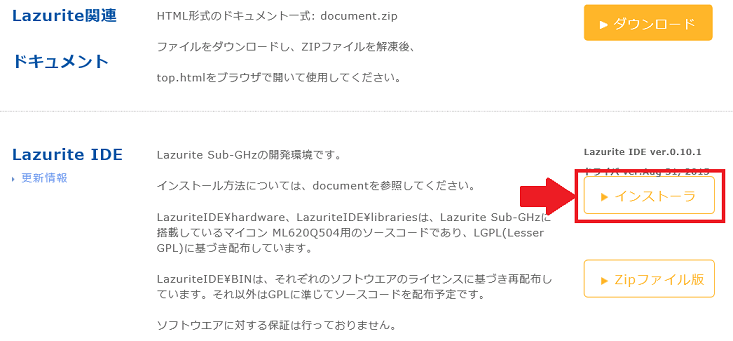
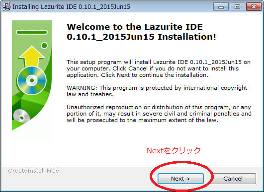
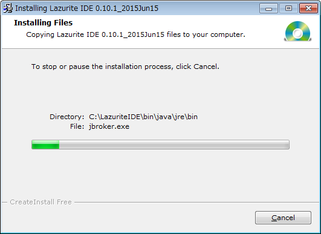
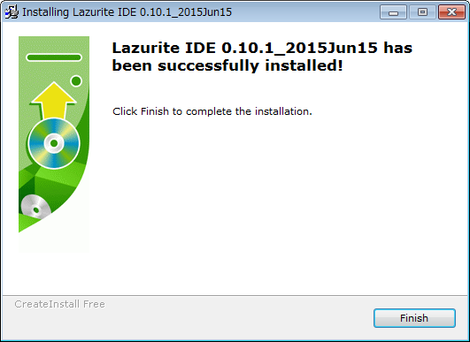
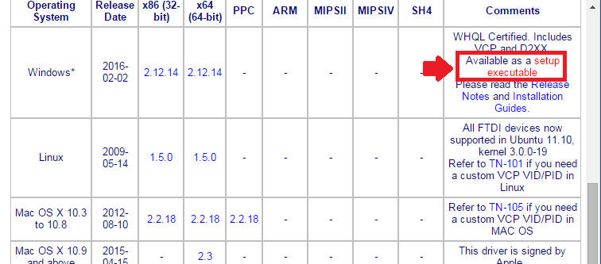

概要
Lazurite IDEのインストール方法
１．Lazuriteトップページの「ダウンロード」メニューをクリックします。

２．次に、ダウンロードページのLazurite IDE「インストーラ」をクリックします。

３．以下の手順でインストールを行ってください。
３ー１. setup.exeをダブルクリックして実行してください。
３ー2. 「Next」をクリックしてください。

3ー３. もう一度、「Next」をクリックしてください。
インストール先のディレクトリは C:\LazuriteIDEです。
インストールを開始します。

３ー4. 「Finish」を押せばインストールが完了します。
USBドライバのインストール
FTDIのホームページからUSBドライバをダウンロードし、インストールしてください。
URL: http://www.ftdichip.com/Drivers/VCP.htm

以上で終了です。